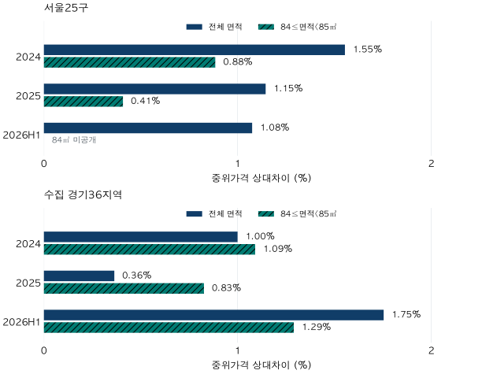

아파트 가격표 읽기 · 거래 포함 기준
해제·직거래를 빼면 아파트 중위가격은 얼마나 달라질까?
서울·경기 실거래의 해제·직거래 포함 규칙을 바꾸면 중위가격은 얼마나 달라질까요? 2024·2025·2026상반기 광역 비교와 공개 가능한 지역·84㎡ 분포로 확인합니다.
분석 기간 · 2024·2025년, 2026년 상반기 계약 | 보유 자료 스냅샷 생성 · 2026-10-04
같은 실거래 자료라도 해제·직거래를 포함하느냐에 따라 대표가격은 달라집니다. 2024년 서울 아파트의 관측 중위가격은 두 표시를 포함하면 9억 6,500만 원, 제외하면 9억 8,000만 원으로 1,500만 원 높았습니다. 하지만 모든 지역에서 높아진 것은 아닙니다. 같은 해 부천시 오정구에서는 오히려 1,500만 원 낮아졌습니다.
‘포함’과 ‘제외’의 출발 자료는 같습니다
대상은 현재 아파트 마스터에 연결된 서울 25개 구와 수집 경기 36개 시·구의 매매 계약입니다. 인천이나 수집하지 않은 경기 지역은 포함하지 않았습니다. 계약일로 기간을 나누고, 양수인 가격·전용면적을 가진 계약에서 토지임대부를 제외했습니다. 여기서 ‘포함’은 이 공통 조건을 통과한 계약에 해제·직거래 표시를 남긴 기준입니다. 모든 원시 행을 그대로 센다는 뜻이 아닙니다.
‘둘 다 제외’는 같은 집합에서 해제 표시 또는 직거래 표시가 있는 계약을 뺍니다. 둘 다 해당하는 계약은 한 번만 제외합니다. 해제 여부는 관측된 해제 표시, 직거래 여부는 관측된 거래유형 표시로 판단했습니다. 잔금이 모두 끝났는지, 표시가 누락됐는지, 직거래 상대가 누구인지는 이번 비교로 확인할 수 없습니다.
국토교통부 FAQ도 신고된 실제 거래가격과 일반시세를 구분하며, 이 자료의 계약일 기준과 주택거래통계의 신고일 기준이 다르다고 설명합니다. 따라서 이 글의 중위가격을 공식 거래량 통계나 지금 거래 가능한 가격으로 바꾸어 읽지 않습니다. 실거래가·호가·KB시세의 차이부터 확인해도 좋습니다.
중복 병합을 먼저 하는 이유
자료에 같은 계약의 원래 행과 뒤늦은 해제 행이 따로 들어 있다면, 해제 행만 먼저 지우고 남은 행을 거래로 세는 오류가 생길 수 있습니다. 이 프로젝트는 같은 계약을 연결하는 병합 규칙을 적용한 뒤 해제·직거래 포함 조건을 적용합니다. 서로 다른 세대임이 확인되는 행까지 이름이 비슷하다는 이유로 합치지는 않습니다.
가상 예시: 같은 계약 A의 ‘5억 원·해제 표시 없음’ 행과 ‘5억 원·해제 표시 있음’ 행이 있다고 합시다. 해제 행부터 지우면 A가 한 건 남습니다. 두 행을 먼저 같은 계약으로 묶고 해제 정보를 보존하면, 포함 기준에서는 한 건, 제외 기준에서는 빠집니다. 이 예시는 처리 순서를 설명할 뿐 실제 특정 계약의 내역은 아닙니다.
이번 계산도 이미 병합된 계약 1건에 1표를 줍니다. 원천 행이 여러 개 붙었다고 여러 표를 주지 않았습니다. 중복 원시 행으로 계산한 중위값을 별도의 ‘시장가격’처럼 제시하지도 않습니다.
두 기준의 중위가격 차이는 얼마였나요?
서울의 제외 중위가격은 포함 기준보다 2024년 1,500만 원, 2025년 1,200만 원, 2026년 상반기 1,000만 원 높았습니다. 포함 기준을 분모로 한 상대차이는 각각 1.55%, 1.15%, 1.08%입니다. 수집 경기는 각각 500만 원·200만 원·1,000만 원, 상대차이는 1.00%·0.36%·1.75%였습니다.
여기서 상대차이의 계산은 100 × (제외 중위가격 ÷ 포함 중위가격 − 1)입니다. 시간에 따른 집값 상승률이 아닙니다. 연간과 반기는 거래된 집과 기간 길이가 다르므로, 표의 행을 이어 ‘2025년보다 2026년 집값이 이렇게 변했다’고 읽지 않습니다.
| 지역·기간 | 건수 포함 / 제외 | 포함 중위 | 제외 중위 | 차액(만 원) | 상대차이 | 제외비중 | 가운데50% 포함 / 제외 |
|---|---|---|---|---|---|---|---|
| 서울25구 · 2024년 | 55,553 / 51,015 | 9.65 | 9.80 | 1,500.00 | 1.55% | 8.17% | 6.67–14.45 / 6.80–14.50 |
| 서울25구 · 2025년 | 77,865 / 69,280 | 10.48 | 10.60 | 1,200.00 | 1.15% | 11.03% | 7.10–15.45 / 7.23–15.50 |
| 서울25구 · 2026년 상반기 | 39,580 / 37,004 | 9.30 | 9.40 | 1,000.00 | 1.08% | 6.51% | 6.44–14.55 / 6.50–14.70 |
| 수집 경기36지역 · 2024년 | 102,687 / 92,853 | 5.00 | 5.05 | 500.00 | 1.00% | 9.58% | 3.50–7.00 / 3.50–7.00 |
| 수집 경기36지역 · 2025년 | 124,405 / 111,135 | 5.50 | 5.52 | 200.00 | 0.36% | 10.67% | 3.75–7.77 / 3.78–7.80 |
| 수집 경기36지역 · 2026년 상반기 | 80,853 / 74,398 | 5.70 | 5.80 | 1,000.00 | 1.75% | 7.98% | 3.90–7.90 / 3.98–8.00 |
제외비중은 빠진 계약 건수의 비율입니다. 예를 들어 제외비중이 크더라도 빠진 가격들이 중위값의 양쪽에 나뉘어 있으면 중위가격은 거의 그대로일 수 있습니다. 제외비중과 가격 차이는 같은 단위도, 같은 질문도 아닙니다. 표에는 가운데 50% 구간도 함께 실었습니다.

해제만 빼는 경우와 직거래만 빼는 경우를 더해도 될까요?
그렇게 계산할 수 없습니다. 두 표시가 겹칠 수 있고, 중위값은 두 제외 결과를 더하는 통계가 아니기 때문입니다. 예를 들어 서울 2025년에는 포함 중위가격 10억 4,800만 원이 해제만 제외하면 10억 4,500만 원으로 낮아졌습니다. 직거래만 제외하면 10억 6,000만 원이고, 둘 다 제외해도 10억 6,000만 원입니다.
수집 경기 2025년에는 포함 5억 5,000만 원, 해제만 제외 5억 4,700만 원, 직거래만 제외 5억 5,800만 원, 둘 다 제외 5억 5,200만 원입니다. 해제 제외의 −300만 원과 직거래 제외의 +800만 원을 더한 +500만 원은 실제 둘 다 제외한 차이 +200만 원과 다릅니다.
세 기간·두 광역의 네 기준 가격 분포 보기
| 지역·기간·기준 | 건수 | 하위25% | 중위 | 상위25% |
|---|---|---|---|---|
| 서울25구 · 2024년 · 포함 | 55,553 | 6.67 | 9.65 | 14.45 |
| 서울25구 · 2024년 · 해제만 제외 | 53,160 | 6.70 | 9.70 | 14.45 |
| 서울25구 · 2024년 · 직거래만 제외 | 53,273 | 6.80 | 9.80 | 14.50 |
| 서울25구 · 2024년 · 둘 다 제외 | 51,015 | 6.80 | 9.80 | 14.50 |
| 서울25구 · 2025년 · 포함 | 77,865 | 7.10 | 10.48 | 15.45 |
| 서울25구 · 2025년 · 해제만 제외 | 72,058 | 7.05 | 10.45 | 15.40 |
| 서울25구 · 2025년 · 직거래만 제외 | 74,868 | 7.27 | 10.60 | 15.55 |
| 서울25구 · 2025년 · 둘 다 제외 | 69,280 | 7.23 | 10.60 | 15.50 |
| 서울25구 · 2026년 상반기 · 포함 | 39,580 | 6.44 | 9.30 | 14.55 |
| 서울25구 · 2026년 상반기 · 해제만 제외 | 38,354 | 6.40 | 9.30 | 14.50 |
| 서울25구 · 2026년 상반기 · 직거래만 제외 | 38,146 | 6.51 | 9.45 | 14.70 |
| 서울25구 · 2026년 상반기 · 둘 다 제외 | 37,004 | 6.50 | 9.40 | 14.70 |
| 수집 경기36지역 · 2024년 · 포함 | 102,687 | 3.50 | 5.00 | 7.00 |
| 수집 경기36지역 · 2024년 · 해제만 제외 | 97,261 | 3.48 | 5.00 | 6.98 |
| 수집 경기36지역 · 2024년 · 직거래만 제외 | 98,042 | 3.51 | 5.05 | 7.00 |
| 수집 경기36지역 · 2024년 · 둘 다 제외 | 92,853 | 3.50 | 5.05 | 7.00 |
| 수집 경기36지역 · 2025년 · 포함 | 124,405 | 3.75 | 5.50 | 7.77 |
| 수집 경기36지역 · 2025년 · 해제만 제외 | 115,663 | 3.70 | 5.47 | 7.70 |
| 수집 경기36지역 · 2025년 · 직거래만 제외 | 119,567 | 3.80 | 5.58 | 7.80 |
| 수집 경기36지역 · 2025년 · 둘 다 제외 | 111,135 | 3.78 | 5.52 | 7.80 |
| 수집 경기36지역 · 2026년 상반기 · 포함 | 80,853 | 3.90 | 5.70 | 7.90 |
| 수집 경기36지역 · 2026년 상반기 · 해제만 제외 | 77,308 | 3.90 | 5.75 | 7.95 |
| 수집 경기36지역 · 2026년 상반기 · 직거래만 제외 | 77,721 | 3.97 | 5.80 | 7.98 |
| 수집 경기36지역 · 2026년 상반기 · 둘 다 제외 | 74,398 | 3.98 | 5.80 | 8.00 |
이 보조 비교는 어떤 집합의 가운데가 움직였는지 확인하는 용도입니다. 해제 때문에 전체 시장이 얼마만큼 비싸졌다는 인과효과가 아니며, 직거래가 모두 비정상 거래라는 판정도 아닙니다. 목적이 신고된 가격의 이력인지, 표시된 해제·직거래를 제외한 분포인지에 따라 쓸 기준이 달라집니다.
어느 지역에서 차이가 컸나요?
2024년 서울 25개 구 중 제외 중위가격이 더 높은 곳은 19개, 낮은 곳은 2개, 같은 곳은 4개였습니다. 수집 경기 36지역은 각각 25개·5개·6개였습니다. 광역 중위가격이 높아졌다는 사실로 모든 지역에 같은 방향을 적용할 수 없습니다.
공개 가능한 61지역 전체에서 절대 상대차이가 가장 큰 사례를 기간별로 고르면, 2024년은 부천시 오정구입니다. 포함 526건의 중위가격은 3억 1,250만 원, 제외 420건은 2억 9,750만 원으로 −1,500만 원, −4.80%였습니다. 2026년 상반기의 같은 선택 규칙에서는 종로구가 가장 큽니다. 포함 352건은 9억 5,000만 원, 제외 308건은 10억 250만 원으로 +5,250만 원, +5.53%였습니다.
두 곳은 서로 다른 기간에서 고른 사례입니다. 왜 차이가 컸는지, 다음 기간에도 반복되는지는 이 순위만으로 알 수 없습니다. 소수의 비싼 계약을 뺐다고 중위값이 반드시 크게 떨어지는 것도 아닙니다. 중위값 주변의 가격 간격과 제외된 계약의 위치가 함께 작용합니다.
2026년 상반기에는 서울 23구·경기 23지역에서 제외 중위가격이 높았고, 나머지 서울 2구·경기 13지역은 같았습니다. 아래 표는 차이 순위가 아닌 지역 코드 순서입니다. 광역값은 이 지역 중위값들을 평균한 것이 아니라 계약을 직접 모아 다시 계산했습니다.
서울25구 · 2024년 전체 지역 비교 펼치기
| 지역 | 건수 포함 / 제외 | 포함 중위 | 제외 중위 | 차액(만 원) | 상대차이 | 제외비중 | 가운데50% 포함 / 제외 |
|---|---|---|---|---|---|---|---|
| 종로구 | 443 / 397 | 10.50 | 10.89 | 3,900.00 | 3.71% | 10.38% | 5.94–16.50 / 6.10–16.70 |
| 중구 | 826 / 753 | 10.75 | 10.75 | 0.00 | 0.00% | 8.84% | 8.44–13.35 / 8.50–13.45 |
| 용산구 | 1,069 / 987 | 18.00 | 17.90 | -1,000.00 | -0.56% | 7.67% | 14.00–26.00 / 14.00–25.65 |
| 성동구 | 2,744 / 2,536 | 13.15 | 13.20 | 500.00 | 0.38% | 7.58% | 10.50–16.00 / 10.50–15.96 |
| 광진구 | 1,303 / 1,156 | 12.00 | 12.43 | 4,250.00 | 3.54% | 11.28% | 9.47–15.30 / 9.80–15.60 |
| 동대문구 | 2,342 / 2,100 | 8.00 | 8.10 | 1,000.00 | 1.25% | 10.33% | 6.40–10.00 / 6.57–10.09 |
| 중랑구 | 1,522 / 1,385 | 6.00 | 6.06 | 600.00 | 1.00% | 9.00% | 4.75–7.50 / 4.76–7.50 |
| 성북구 | 2,922 / 2,705 | 7.70 | 7.77 | 700.00 | 0.91% | 7.43% | 6.50–9.20 / 6.50–9.25 |
| 강북구 | 878 / 799 | 6.20 | 6.30 | 1,000.00 | 1.61% | 9.00% | 5.08–7.20 / 5.15–7.25 |
| 도봉구 | 1,550 / 1,431 | 5.25 | 5.28 | 300.00 | 0.57% | 7.68% | 3.93–6.60 / 3.96–6.64 |
| 노원구 | 4,022 / 3,686 | 5.70 | 5.72 | 200.00 | 0.35% | 8.35% | 4.59–7.40 / 4.60–7.45 |
| 은평구 | 2,014 / 1,773 | 7.60 | 7.80 | 2,000.00 | 2.63% | 11.97% | 5.87–9.40 / 6.15–9.47 |
| 서대문구 | 2,205 / 1,936 | 8.85 | 9.18 | 3,300.00 | 3.73% | 12.20% | 6.80–11.50 / 7.10–11.75 |
| 마포구 | 2,621 / 2,460 | 12.50 | 12.65 | 1,500.00 | 1.20% | 6.14% | 9.80–15.90 / 10.00–15.95 |
| 양천구 | 2,504 / 2,362 | 11.00 | 11.21 | 2,100.00 | 1.91% | 5.67% | 6.90–15.45 / 7.00–15.50 |
| 강서구 | 2,753 / 2,534 | 7.70 | 7.79 | 950.00 | 1.23% | 7.95% | 5.80–10.10 / 5.86–10.24 |
| 구로구 | 2,216 / 2,032 | 6.50 | 6.60 | 1,000.00 | 1.54% | 8.30% | 4.95–8.20 / 5.00–8.26 |
| 금천구 | 718 / 642 | 6.00 | 6.00 | 0.00 | 0.00% | 10.58% | 4.60–7.35 / 4.70–7.40 |
| 영등포구 | 2,901 / 2,648 | 10.45 | 10.41 | -350.00 | -0.33% | 8.72% | 8.00–13.58 / 8.05–13.38 |
| 동작구 | 2,483 / 2,308 | 11.00 | 11.00 | 0.00 | 0.00% | 7.05% | 8.95–13.50 / 9.00–13.50 |
| 관악구 | 1,418 / 1,312 | 7.50 | 7.60 | 1,000.00 | 1.33% | 7.48% | 6.00–8.90 / 6.10–8.95 |
| 서초구 | 3,001 / 2,800 | 23.50 | 23.50 | 0.00 | 0.00% | 6.70% | 16.60–31.80 / 16.90–32.00 |
| 강남구 | 3,612 / 3,307 | 22.50 | 22.70 | 2,000.00 | 0.89% | 8.44% | 15.85–30.80 / 16.30–31.00 |
| 송파구 | 4,288 / 4,080 | 15.82 | 16.00 | 1,750.00 | 1.11% | 4.85% | 11.40–21.80 / 11.48–21.90 |
| 강동구 | 3,198 / 2,886 | 10.80 | 11.20 | 4,000.00 | 3.70% | 9.76% | 8.05–13.40 / 8.40–13.50 |
서울25구 · 2026년 상반기 전체 지역 비교 펼치기
| 지역 | 건수 포함 / 제외 | 포함 중위 | 제외 중위 | 차액(만 원) | 상대차이 | 제외비중 | 가운데50% 포함 / 제외 |
|---|---|---|---|---|---|---|---|
| 종로구 | 352 / 308 | 9.50 | 10.03 | 5,250.00 | 5.53% | 12.50% | 6.28–14.40 / 7.29–15.05 |
| 중구 | 536 / 496 | 13.22 | 13.32 | 1,000.00 | 0.76% | 7.46% | 9.12–15.95 / 9.24–15.95 |
| 용산구 | 619 / 584 | 20.50 | 20.52 | 250.00 | 0.12% | 5.65% | 14.50–29.88 / 14.50–30.00 |
| 성동구 | 929 / 874 | 17.15 | 17.20 | 500.00 | 0.29% | 5.92% | 14.50–20.50 / 14.76–20.50 |
| 광진구 | 551 / 483 | 15.00 | 15.60 | 6,000.00 | 4.00% | 12.34% | 8.95–18.97 / 10.00–19.20 |
| 동대문구 | 1,722 / 1,595 | 9.60 | 9.75 | 1,500.00 | 1.56% | 7.38% | 7.45–12.27 / 7.65–12.40 |
| 중랑구 | 1,533 / 1,431 | 6.65 | 6.70 | 500.00 | 0.75% | 6.65% | 5.40–8.00 / 5.40–8.05 |
| 성북구 | 2,410 / 2,303 | 9.25 | 9.30 | 500.00 | 0.54% | 4.44% | 7.53–11.15 / 7.70–11.20 |
| 강북구 | 934 / 896 | 7.20 | 7.25 | 500.00 | 0.69% | 4.07% | 5.91–8.48 / 6.00–8.50 |
| 도봉구 | 1,613 / 1,520 | 5.45 | 5.47 | 200.00 | 0.37% | 5.77% | 4.05–7.05 / 4.02–7.13 |
| 노원구 | 4,654 / 4,405 | 6.00 | 6.00 | 0.00 | 0.00% | 5.35% | 4.83–7.80 / 4.90–7.90 |
| 은평구 | 1,893 / 1,761 | 8.50 | 8.65 | 1,500.00 | 1.76% | 6.97% | 6.40–10.80 / 6.60–10.90 |
| 서대문구 | 1,557 / 1,465 | 9.80 | 9.85 | 500.00 | 0.51% | 5.91% | 7.45–13.10 / 7.50–13.13 |
| 마포구 | 1,112 / 1,035 | 14.50 | 14.70 | 2,000.00 | 1.38% | 6.92% | 10.05–19.55 / 10.29–19.60 |
| 양천구 | 1,479 / 1,372 | 10.50 | 10.71 | 2,100.00 | 2.00% | 7.23% | 6.99–16.90 / 7.07–17.12 |
| 강서구 | 2,672 / 2,474 | 8.70 | 8.90 | 2,000.00 | 2.30% | 7.41% | 6.65–11.37 / 6.75–11.40 |
| 구로구 | 2,342 / 2,203 | 6.98 | 7.00 | 200.00 | 0.29% | 5.94% | 5.70–8.90 / 5.83–9.00 |
| 금천구 | 758 / 709 | 6.04 | 6.15 | 1,087.50 | 1.80% | 6.46% | 4.68–8.10 / 4.70–8.10 |
| 영등포구 | 1,810 / 1,706 | 12.00 | 12.00 | 0.00 | 0.00% | 5.75% | 8.45–15.60 / 8.55–15.70 |
| 동작구 | 1,414 / 1,320 | 14.20 | 14.39 | 1,900.00 | 1.34% | 6.65% | 11.30–16.74 / 11.50–16.80 |
| 관악구 | 1,385 / 1,257 | 8.50 | 8.90 | 4,000.00 | 4.71% | 9.24% | 6.15–11.20 / 6.35–11.30 |
| 서초구 | 1,316 / 1,211 | 24.50 | 25.00 | 5,000.00 | 2.04% | 7.98% | 16.00–35.50 / 16.43–36.08 |
| 강남구 | 1,617 / 1,472 | 26.20 | 26.60 | 4,000.00 | 1.53% | 8.97% | 16.75–35.95 / 17.10–36.00 |
| 송파구 | 2,393 / 2,236 | 18.30 | 18.40 | 1,000.00 | 0.55% | 6.56% | 12.45–28.30 / 12.64–28.40 |
| 강동구 | 1,979 / 1,888 | 13.50 | 13.57 | 750.00 | 0.56% | 4.60% | 8.70–17.30 / 8.80–17.30 |
수집 경기36지역 · 2024년 전체 지역 비교 펼치기
| 지역 | 건수 포함 / 제외 | 포함 중위 | 제외 중위 | 차액(만 원) | 상대차이 | 제외비중 | 가운데50% 포함 / 제외 |
|---|---|---|---|---|---|---|---|
| 수원시 장안구 | 2,223 / 2,004 | 4.40 | 4.45 | 500.00 | 1.14% | 9.85% | 3.51–5.99 / 3.55–6.00 |
| 수원시 권선구 | 3,356 / 3,002 | 4.24 | 4.25 | 100.00 | 0.24% | 10.55% | 3.30–5.50 / 3.35–5.50 |
| 수원시 팔달구 | 1,447 / 1,256 | 5.20 | 5.28 | 800.00 | 1.54% | 13.20% | 3.40–6.85 / 3.59–6.90 |
| 수원시 영통구 | 4,903 / 4,557 | 5.85 | 5.85 | 0.00 | 0.00% | 7.06% | 4.10–8.10 / 4.10–8.09 |
| 성남시 수정구 | 1,152 / 993 | 10.40 | 10.20 | -2,000.00 | -1.92% | 13.80% | 7.50–12.30 / 7.25–12.45 |
| 성남시 중원구 | 1,148 / 1,037 | 6.78 | 6.79 | 100.00 | 0.15% | 9.67% | 5.12–8.20 / 5.20–8.20 |
| 성남시 분당구 | 4,419 / 4,146 | 12.00 | 12.15 | 1,500.00 | 1.25% | 6.18% | 8.70–15.36 / 8.80–15.45 |
| 의정부시 | 4,285 / 3,888 | 3.20 | 3.25 | 500.00 | 1.56% | 9.26% | 2.35–4.23 / 2.38–4.25 |
| 안양시 만안구 | 1,560 / 1,380 | 5.45 | 5.49 | 400.00 | 0.73% | 11.54% | 3.95–6.55 / 4.00–6.58 |
| 안양시 동안구 | 3,983 / 3,615 | 6.20 | 6.27 | 700.00 | 1.13% | 9.24% | 4.70–7.95 / 4.75–8.00 |
| 부천시 원미구 | 3,164 / 2,827 | 5.07 | 5.12 | 500.00 | 0.99% | 10.65% | 3.37–6.50 / 3.35–6.60 |
| 부천시 소사구 | 1,616 / 1,375 | 4.95 | 5.10 | 1,500.00 | 3.03% | 14.91% | 3.50–5.98 / 3.55–6.08 |
| 부천시 오정구 | 526 / 420 | 3.12 | 2.98 | -1,500.00 | -4.80% | 20.15% | 1.70–4.50 / 1.70–4.36 |
| 광명시 | 2,615 / 2,404 | 6.90 | 6.98 | 800.00 | 1.16% | 8.07% | 4.95–8.90 / 4.95–8.90 |
| 평택시 | 5,695 / 4,956 | 3.00 | 3.05 | 500.00 | 1.67% | 12.98% | 1.80–4.02 / 1.84–4.05 |
| 안산시 상록구 | 1,568 / 1,425 | 3.75 | 3.75 | 0.00 | 0.00% | 9.12% | 2.80–5.06 / 2.80–5.10 |
| 안산시 단원구 | 2,673 / 2,447 | 4.40 | 4.42 | 150.00 | 0.34% | 8.45% | 3.07–5.50 / 3.08–5.50 |
| 고양시 덕양구 | 3,754 / 3,422 | 5.10 | 5.08 | -150.00 | -0.29% | 8.84% | 3.35–6.58 / 3.33–6.59 |
| 고양시 일산동구 | 2,078 / 1,869 | 5.00 | 5.00 | 0.00 | 0.00% | 10.06% | 3.47–6.75 / 3.48–6.80 |
| 고양시 일산서구 | 2,762 / 2,485 | 3.92 | 3.90 | -250.00 | -0.64% | 10.03% | 3.00–5.03 / 3.00–5.00 |
| 과천시 | 778 / 711 | 16.00 | 16.00 | 0.00 | 0.00% | 8.61% | 14.40–18.70 / 14.43–18.73 |
| 구리시 | 1,359 / 1,215 | 6.20 | 6.25 | 500.00 | 0.81% | 10.60% | 5.16–7.22 / 5.28–7.30 |
| 남양주시 | 6,091 / 5,445 | 4.30 | 4.30 | 0.00 | 0.00% | 10.61% | 3.16–6.30 / 3.20–6.30 |
| 군포시 | 2,481 / 2,271 | 4.23 | 4.25 | 200.00 | 0.47% | 8.46% | 3.30–5.75 / 3.30–5.79 |
| 의왕시 | 1,390 / 1,246 | 6.30 | 6.40 | 1,000.00 | 1.59% | 10.36% | 4.90–8.18 / 5.00–8.25 |
| 하남시 | 3,272 / 2,980 | 8.66 | 8.67 | 50.00 | 0.06% | 8.92% | 7.20–10.39 / 7.28–10.40 |
| 용인시 처인구 | 1,863 / 1,643 | 3.28 | 3.30 | 200.00 | 0.61% | 11.81% | 2.30–4.23 / 2.35–4.25 |
| 용인시 기흥구 | 4,387 / 3,946 | 5.27 | 5.30 | 300.00 | 0.57% | 10.05% | 4.10–6.30 / 4.15–6.40 |
| 용인시 수지구 | 5,182 / 4,793 | 7.45 | 7.45 | 0.00 | 0.00% | 7.51% | 6.40–9.00 / 6.40–9.00 |
| 파주시 | 4,140 / 3,780 | 3.60 | 3.63 | 300.00 | 0.83% | 8.70% | 2.40–4.80 / 2.41–4.80 |
| 김포시 | 5,248 / 4,764 | 4.47 | 4.48 | 50.00 | 0.11% | 9.22% | 3.67–5.40 / 3.67–5.40 |
| 화성시 만세구 | 1,637 / 1,433 | 3.67 | 3.70 | 250.00 | 0.68% | 12.46% | 2.50–4.70 / 2.48–4.80 |
| 화성시 효행구 | 1,319 / 1,197 | 3.16 | 3.15 | -100.00 | -0.32% | 9.25% | 2.47–4.05 / 2.48–4.00 |
| 화성시 병점구 | 1,860 / 1,707 | 3.75 | 3.75 | 29.50 | 0.08% | 8.23% | 3.10–4.95 / 3.10–5.00 |
| 화성시 동탄구 | 4,622 / 4,312 | 6.32 | 6.35 | 300.00 | 0.47% | 6.71% | 5.54–7.90 / 5.58–7.85 |
| 광주시 | 2,131 / 1,902 | 4.04 | 4.05 | 100.00 | 0.25% | 10.75% | 3.00–4.95 / 3.00–4.99 |
수집 경기36지역 · 2026년 상반기 전체 지역 비교 펼치기
| 지역 | 건수 포함 / 제외 | 포함 중위 | 제외 중위 | 차액(만 원) | 상대차이 | 제외비중 | 가운데50% 포함 / 제외 |
|---|---|---|---|---|---|---|---|
| 수원시 장안구 | 1,676 / 1,611 | 5.25 | 5.30 | 500.00 | 0.95% | 3.88% | 4.08–6.80 / 4.10–6.80 |
| 수원시 권선구 | 2,822 / 2,569 | 4.70 | 4.70 | 0.00 | 0.00% | 8.97% | 3.65–5.98 / 3.67–6.00 |
| 수원시 팔달구 | 1,531 / 1,453 | 6.70 | 6.78 | 800.00 | 1.19% | 5.09% | 5.00–7.80 / 5.30–7.84 |
| 수원시 영통구 | 3,480 / 3,336 | 6.00 | 6.00 | 0.00 | 0.00% | 4.14% | 4.50–8.83 / 4.55–8.85 |
| 성남시 수정구 | 936 / 707 | 12.31 | 12.45 | 1,400.00 | 1.14% | 24.47% | 8.30–13.90 / 7.80–14.50 |
| 성남시 중원구 | 1,041 / 978 | 8.00 | 8.10 | 1,000.00 | 1.25% | 6.05% | 5.65–10.10 / 5.70–10.20 |
| 성남시 분당구 | 2,373 / 2,239 | 14.95 | 14.98 | 300.00 | 0.20% | 5.65% | 11.50–18.50 / 11.55–18.50 |
| 의정부시 | 2,934 / 2,683 | 3.42 | 3.44 | 225.00 | 0.66% | 8.55% | 2.50–4.60 / 2.50–4.63 |
| 안양시 만안구 | 1,755 / 1,604 | 6.00 | 6.00 | 0.00 | 0.00% | 8.60% | 4.50–7.40 / 4.55–7.45 |
| 안양시 동안구 | 3,213 / 3,033 | 7.30 | 7.35 | 500.00 | 0.68% | 5.60% | 5.35–9.65 / 5.45–9.70 |
| 부천시 원미구 | 2,447 / 2,208 | 5.40 | 5.50 | 1,000.00 | 1.85% | 9.77% | 3.75–6.90 / 3.90–6.95 |
| 부천시 소사구 | 1,336 / 1,169 | 5.45 | 5.55 | 1,000.00 | 1.83% | 12.50% | 3.60–6.25 / 3.87–6.40 |
| 부천시 오정구 | 339 / 283 | 3.10 | 3.17 | 700.00 | 2.26% | 16.52% | 1.72–4.60 / 1.75–4.68 |
| 광명시 | 2,057 / 1,972 | 7.90 | 7.90 | 0.00 | 0.00% | 4.13% | 6.00–11.00 / 6.00–11.00 |
| 평택시 | 4,231 / 3,653 | 2.98 | 3.07 | 900.00 | 3.02% | 13.66% | 1.75–4.05 / 1.90–4.15 |
| 안산시 상록구 | 990 / 880 | 3.70 | 3.70 | 0.00 | 0.00% | 11.11% | 2.80–5.05 / 2.84–5.10 |
| 안산시 단원구 | 1,577 / 1,435 | 4.80 | 4.80 | 0.00 | 0.00% | 9.00% | 3.50–5.95 / 3.50–5.96 |
| 고양시 덕양구 | 2,864 / 2,647 | 5.76 | 5.80 | 400.00 | 0.69% | 7.58% | 3.59–7.47 / 3.60–7.50 |
| 고양시 일산동구 | 1,182 / 1,070 | 5.07 | 5.16 | 850.00 | 1.68% | 9.48% | 3.54–6.80 / 3.60–6.82 |
| 고양시 일산서구 | 1,624 / 1,460 | 3.75 | 3.75 | 0.00 | 0.00% | 10.10% | 2.95–4.90 / 2.95–4.90 |
| 과천시 | 166 / 155 | 21.00 | 21.30 | 3,000.00 | 1.43% | 6.63% | 19.80–24.20 / 19.85–24.23 |
| 구리시 | 2,489 / 2,323 | 6.90 | 6.93 | 300.00 | 0.43% | 6.67% | 5.95–8.25 / 5.95–8.25 |
| 남양주시 | 5,123 / 4,623 | 4.95 | 5.00 | 500.00 | 1.01% | 9.76% | 3.42–7.65 / 3.50–7.80 |
| 군포시 | 2,425 / 2,258 | 4.40 | 4.40 | 0.00 | 0.00% | 6.89% | 3.37–6.00 / 3.39–6.00 |
| 의왕시 | 1,251 / 1,194 | 7.48 | 7.50 | 200.00 | 0.27% | 4.56% | 5.38–9.60 / 5.43–9.65 |
| 하남시 | 1,773 / 1,683 | 10.60 | 10.70 | 1,000.00 | 0.94% | 5.08% | 8.00–12.65 / 8.16–12.70 |
| 용인시 처인구 | 1,369 / 1,235 | 3.70 | 3.77 | 700.00 | 1.89% | 9.79% | 2.55–4.80 / 2.60–4.86 |
| 용인시 기흥구 | 5,087 / 4,707 | 6.00 | 6.00 | 0.00 | 0.00% | 7.47% | 4.64–7.50 / 4.70–7.50 |
| 용인시 수지구 | 3,633 / 3,475 | 8.80 | 8.80 | 0.00 | 0.00% | 4.35% | 7.50–10.77 / 7.51–10.80 |
| 파주시 | 2,309 / 2,132 | 3.75 | 3.80 | 500.00 | 1.33% | 7.67% | 2.54–5.19 / 2.60–5.20 |
| 김포시 | 2,605 / 2,394 | 4.40 | 4.45 | 450.00 | 1.02% | 8.10% | 3.63–5.50 / 3.65–5.50 |
| 화성시 만세구 | 730 / 642 | 3.80 | 3.80 | 0.00 | 0.00% | 12.05% | 2.69–4.50 / 2.71–4.60 |
| 화성시 효행구 | 930 / 869 | 3.68 | 3.69 | 100.00 | 0.27% | 6.56% | 2.67–4.49 / 2.67–4.48 |
| 화성시 병점구 | 1,690 / 1,583 | 4.50 | 4.50 | 0.00 | 0.00% | 6.33% | 3.37–6.70 / 3.40–6.75 |
| 화성시 동탄구 | 7,069 / 6,501 | 7.25 | 7.25 | 0.00 | 0.00% | 8.04% | 5.95–9.20 / 5.95–9.23 |
| 광주시 | 1,796 / 1,634 | 4.55 | 4.60 | 500.00 | 1.10% | 9.02% | 3.30–5.64 / 3.35–5.69 |
2025년 서울·경기의 지역 비교표는 모두 미공개입니다. 이 표의 연간 합계가 기존 반기·정책기간 합계와 결합하면 더 짧은 기간의 작은 계약 집계를 계산할 수 있기 때문입니다. 건수만 가리고 가격·비율을 남기지 않았으며, 보이는 두 기간을 전체 시기의 공통 법칙으로 일반화하지 않습니다.
같은 84㎡로 좁히면 차이가 사라지나요?
전체 면적에는 작은 집과 큰 집의 거래 구성이 섞입니다. 이를 조금 좁혀 보기 위해 두 광역에서 전용 84≤면적<85㎡만 다시 비교했습니다. 2024년 서울은 포함 중위 11억 3,000만 원에서 제외 11억 4,000만 원으로 +1,000만 원(+0.88%)입니다. 같은 해 수집 경기는 5억 5,000만 원에서 5억 5,600만 원으로 +600만 원(+1.09%)입니다.
서울에서는 전체 면적의 +1.55%보다 작지만, 수집 경기에서는 전체 면적의 +1.00%보다 조금 큽니다. 따라서 면적을 맞추면 정제 기준의 차이가 항상 줄어든다고도 말할 수 없습니다. 아래 표에서 나머지 기간과 표본 수를 함께 확인할 수 있습니다.
| 지역·기간 | 건수 포함 / 제외 | 포함 중위 | 제외 중위 | 차액(만 원) | 상대차이 | 제외비중 | 가운데50% 포함 / 제외 |
|---|---|---|---|---|---|---|---|
| 서울25구 · 2024년 | 18,084 / 16,879 | 11.30 | 11.40 | 1,000.00 | 0.88% | 6.66% | 8.27–15.10 / 8.35–15.25 |
| 서울25구 · 2025년 | 25,424 / 22,967 | 12.25 | 12.30 | 500.00 | 0.41% | 9.66% | 8.88–16.30 / 8.95–16.40 |
| 서울25구 · 2026년 상반기 | 미공개 | 미공개 | 미공개 | 미공개 | 미공개 | 미공개 | 미공개 |
| 수집 경기36지역 · 2024년 | 37,229 / 33,721 | 5.50 | 5.56 | 600.00 | 1.09% | 9.42% | 4.00–7.30 / 4.04–7.37 |
| 수집 경기36지역 · 2025년 | 44,404 / 39,789 | 6.05 | 6.10 | 500.00 | 0.83% | 10.39% | 4.25–8.25 / 4.28–8.28 |
| 수집 경기36지역 · 2026년 상반기 | 29,170 / 26,867 | 6.20 | 6.28 | 800.00 | 1.29% | 7.90% | 4.40–8.40 / 4.45–8.40 |
서울 2026년 상반기 84㎡ 비교는 기존 글의 더 넓은 모집단 합계와 차감했을 때 작은 집계가 드러나 미공개했습니다. 기존 서울·경기 84㎡ 가격 분포의 제외 기준 자체를 바꾸거나, 이전에 공개된 값을 없던 것으로 처리한 것은 아닙니다.
가장 강한 반론: 면적을 맞춰도 같은 집은 아닙니다
84㎡ 안에서도 단지·연식·층·정확한 면적·계약월이 다릅니다. 해제나 직거래로 제외된 집의 구성도 남은 집과 다를 수 있습니다. 이번에는 같은 주택을 반복 비교하거나 모든 주택 조건을 통제하지 않았습니다. 그러므로 이 결과는 ‘직거래 할인율’, ‘해제에 의한 가격 부풀림’, 특정 지역의 적정가를 추정한 값이 아닙니다.
반대로 차이가 작거나 0이라고 해서 정제 규칙이 중요하지 않은 것도 아닙니다. 중위값은 일부 계약이 빠져도 그대로일 수 있고, 분포의 다른 부분이나 표본 수는 달라질 수 있습니다. 기간·지역·면적·대표 통계를 바꾸면 차이의 크기와 방향도 달라질 수 있습니다.
가격표를 비교할 때 다섯 가지를 적어 보세요
- 가격의 뜻: 신고가격의 중위인지, 현재 호가인지, 조사·모형 시세인지 확인합니다.
- 대상과 기간: 지역·전용면적·계약일 범위가 같은지, 한 해와 반기를 섞지 않았는지 확인합니다.
- 포함 규칙: 해제·직거래·토지임대부를 어떻게 처리했는지, 중복 병합을 먼저 했는지 확인합니다.
- 건수와 분포: 두 기준의 건수·제외비중·중위·가운데50%를 함께 읽습니다. 큰 차이를 곧 조작으로 해석하지 않습니다.
- 자료 시점: 뒤늦은 신고·해제가 반영된 날짜인지, 당시 알 수 있었던 자료인지 구분합니다. 미공개와 차이0을 구분합니다.
예를 들어 두 서비스의 가격이 다르면 더 높은 숫자나 더 마음에 드는 숫자를 고르기 전에 이 다섯 항목을 나란히 적어 보세요. 같은 조건인지 확인되지 않으면 가격 차이의 원인도 아직 확인되지 않은 것입니다. 실제 후보 집의 조건과 현재 제시 가격은 그다음에 따로 비교합니다.
자료·정제 규칙·공개 검증 방법
- 원천: 국토교통부 아파트 매매 실거래가 상세 자료의 자체 집계. 실거래가 FAQ의 자료·시세·계약일 설명을 확인했습니다. 표는 국토부가 정한 공식 중위가격 통계가 아닙니다.
- 기간: 2024년1~12월·2025년1~12월·2026년1~6월을 집계 전에 고정했습니다. 지역은 현재 마스터의61지역입니다. 해제 표시는2020년2월, 거래유형 구분은2021년11월부터 식별 가능한 자료여서 그 이전 기간에 같은 제외 기준을 소급하지 않았습니다.
- 정제: 양수 금액·전용면적, 토지임대부 제외를 공통 적용했습니다. 이미 병합된 계약의 관측 해제 표시와 직거래 표시를 사용한 비교입니다. 취소일과 원천 구성행 전체를 이용하는 별도의 모형용 적격 규칙과 혼합하지 않습니다. 표시 없음이 잔금 완료나 미수정 상태를 보증하지는 않습니다.
- 계산: 계약1건=1표, 가격 단위 만 원에서 선형 보간 중위·하위25%·상위25%를 계산했습니다. 광역은 계약을 직접 모아 계산합니다. 표의 억 원은 소수 둘째 자리로 반올림하며 차액·비율은 반올림 전 값으로 계산합니다. 따라서 표시된 억 원끼리 뺀 값과 만 원 차액이 다를 수 있습니다. 반올림 전 공개 집계 JSON을 제공합니다.
- 공개 기준: 각 가격분포40건 이상, 양수 공개·차감 집계10건 이상을 요구했습니다. 기존 공개 합계와 함께 계산할 수 있는 작은 집계도 검사했습니다. 실패한 광역×기간의 지역표 또는 면적 비교는 건수·가격·비율을 함께 미공개했습니다. 개별 계약·단지 식별자는 내보내지 않았습니다.
- 독립 대조: 관측 테이블 SQL과 병합 fact의 원천 날짜·금액·면적·해제·거래유형으로 재분류한 Python의402개 가격분포를 대조했습니다. 계약·마스터 키, 원천행 계보 유일성, 기존 공개 건수와 분위수, 원천 파일의 읽기 전후 식별정보를 확인했습니다. 이 대조는 모든 실제 계약이 원천에 빠짐없이 수록됐다는 보장은 아닙니다.
- 시점: 보유 스냅샷 생성일2026-10-04, 수록 기준 끝월2026-09. 실제 신고·수집 도착 컷오프는 미확인입니다. 최근 분기를 피해6월에서 비교를 끝냈지만 당시6월 말에 알 수 있던 자료만의 결과는 아닙니다. 과거 계약도 수정될 수 있습니다.
분석·집필: 파파펭귄(Nobot Kang). 에이전트로 집계 대조·계산·초안 검토를 보조했습니다. 공식 원천 확인일: 2026-10-10.